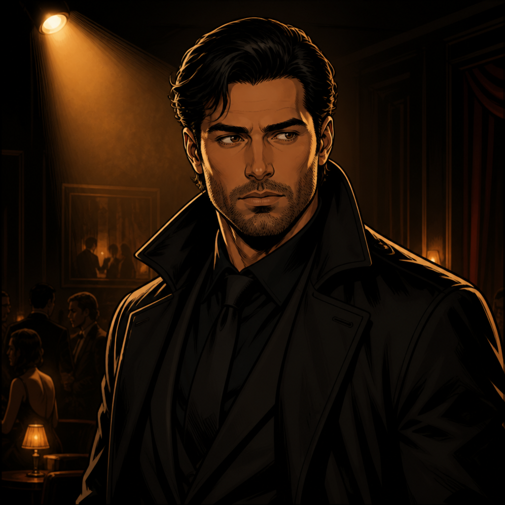
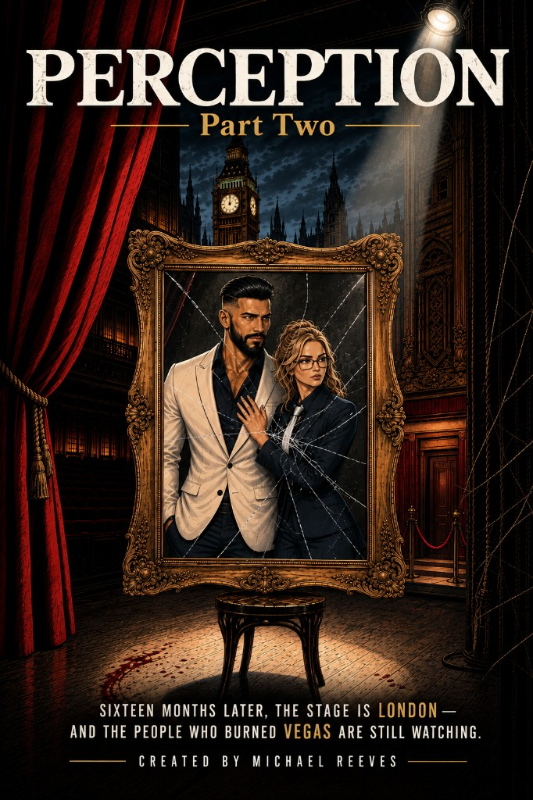
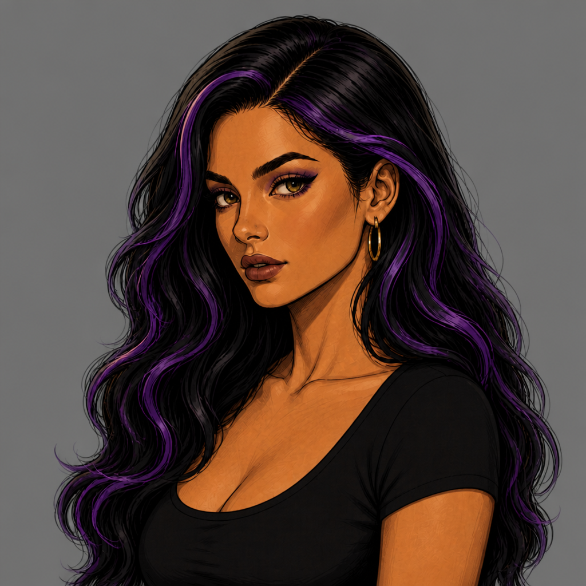
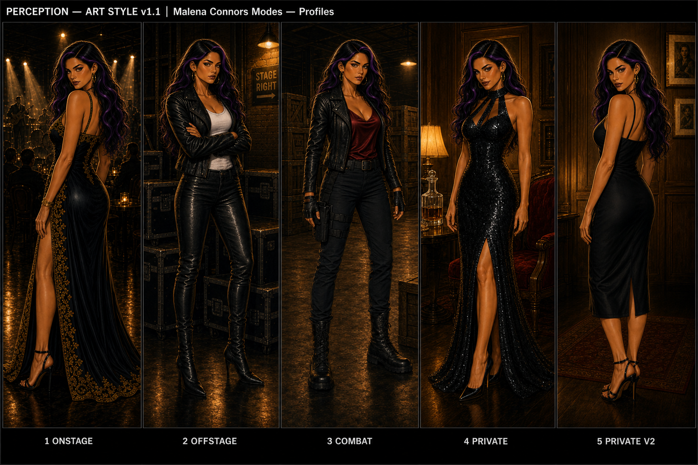
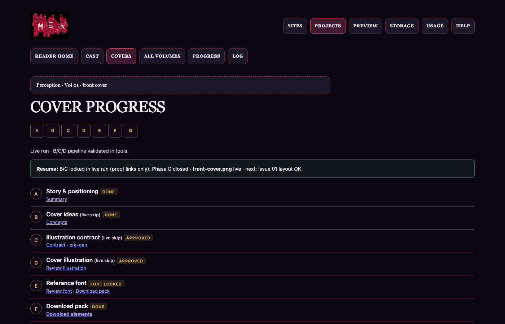

Art direction
Master board locks palette, line weight, and lighting before scene passes. Scene samples in the gallery test club, warehouse, and bank beats — page-shaped tests, not final lettering.

Michael Reeves · Portfolio
Case study
A two-part Vegas noir GN and the local production system around it — studio-first on the portfolio, gates before ship, same verify habits as MSR programme sites.
My role: creator, art direction, character pipeline (Pass A/B/Modes), and local Cover · Book · Ship tooling on Herd — Oct 2026, work in progress.

Multi-site web delivery and a long-form book share one machine. Without a shared local estate and explicit stages, art and tooling drift — and a portfolio of random WIP pages does not show how the book is produced. Perception is also a duology: appearance vs truth in the Vegas underground (Part One: Carl Richards, club Nirvana).
Non-obvious calls that shape what visitors see vs what stays in projects/comic/.
| Decision | Alternative | Why |
|---|---|---|
| Studio ≠ reader on portfolio | Ship a flip-book demo from WIP exports | Would imply lettered pages and locked cast before Story DNA and owner gates complete. |
| Modes layout lock before batch character gen | Generate-until-lucky strips | Cast comparison sheets need fixed columns and face-lock rules machine-checkable in pipeline. |
| Cover hub A–G with owner gates | Single-shot cover prompts | Volume fronts need phase ladder (concept → plate → compose → typed final), not one image. |
| Gallery appendix for full archive | Scatter every strip on the case study | Recruiters skim captions; dense grids hide the narrative and stale screenshots faster. |
| edit:verify + acceptance on portfolio UI | Visual check only | Same estate law as programme sites — HTTP needles and review after diffs. |
Three artifacts — framing, character pipeline, covers — not the full archive.
Master board locks palette, line weight, and lighting before scene passes. Scene samples in the gallery test club, warehouse, and bank beats — page-shaped tests, not final lettering.

Part One is the active programme volume. Part Two jacket is exploratory (London stage) — labelled separately so it is not read as registered tooling.


Malena Connors through Identity → Modes — illustrates locked layout without claiming the full cast is approved. Full v6 strips live in the gallery appendix.


One local UI capture — phase ladder for covers. Screenshot dated Oct 2026; chrome may change; the gate model is the point.

What is demonstrable on the estate today (not comic sales metrics).
Interview walkthrough: outcome + decision log → one craft block → Malena pipeline → cover hub → point to gallery for depth.
Full visual development deck — all Modes strips, scene samples, and pipeline templates — for readers who want the archive after the story above.